Give every role its own AI teammate: a real agent with its own model, memory, skills, routines and computer. They work alone. They work together. You approve what matters.
Windows installer · Linux .deb / AppImage · macOS from source · no MimirBot account
MimirBot
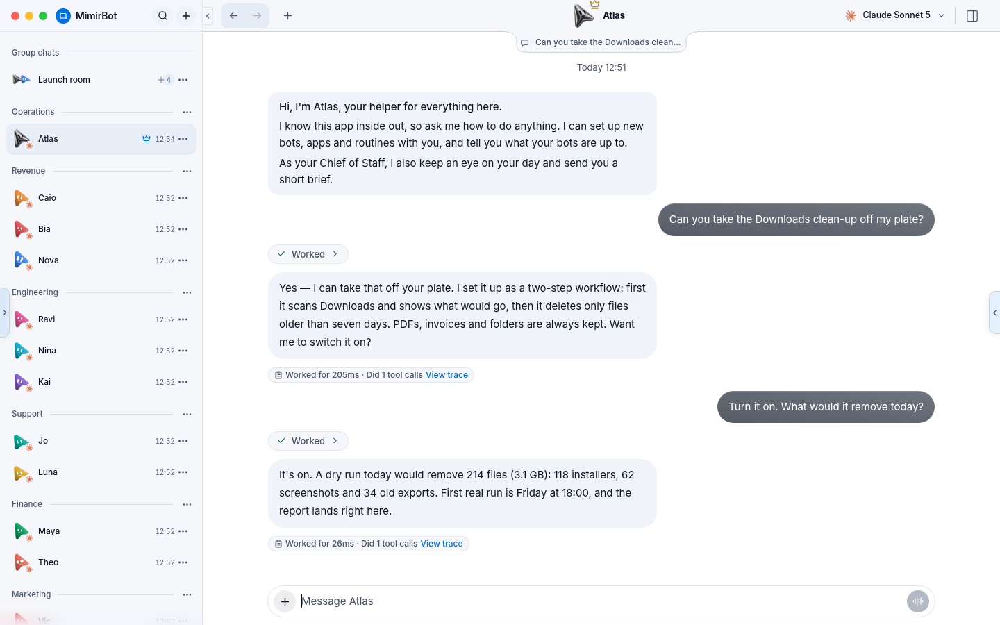
Weekly Downloads clean-upNext run Friday, 18:00 · Atlas
Your machine. Transcripts, memory and keys stay local.
Your models. Claude, Codex, Grok or a local endpoint.
Accountable. Approvals, run history and a usage ledger.
Open. Apache 2.0, auditable, no lock-in.
Why you need MimirBot
A company does not run on one generalist with one chat box. It runs on roles, rituals, handoffs, approvals and a shared memory of what was decided. MimirBot is a workspace of agents: each one owns a role, some work alone, some work together, and the workspace owns the rules. A single assistant can answer a question; it cannot run the shape of the work.
Alone, with its own everything
Each bot has its own model, instructions, memory, skills, routines, permissions and computer. Nova does not inherit Kai's context; she gets the sales context she needs and nothing else.
Together, in rooms and handoffs
Mention a bot, a department or @everyone. The Chief of Staff routes an unaddressed request, and one bot can hand work to another with the thread, the files and the reason attached.
Accountable by default
Approvals, permissions, run history and a usage ledger belong to the workspace, not to a prompt. You can see what ran, what it cost, what failed, and who asked for it.
Your models, your machine
Keep the Claude, Codex or Grok login you already pay for. Point a bot at a local model or an OpenAI-compatible endpoint. Nothing is proxied through an account you do not control.
Memory that belongs to the department
People, places, decisions and terms live in department memory and load into every bot in that department. The knowledge stays when a thread is archived or a bot is replaced.
Start with one team, not a migration
Import a team from one Markdown file, or build one department by hand. Connections stay off until you approve them, routines arrive paused, and no package carries credentials or conversations.
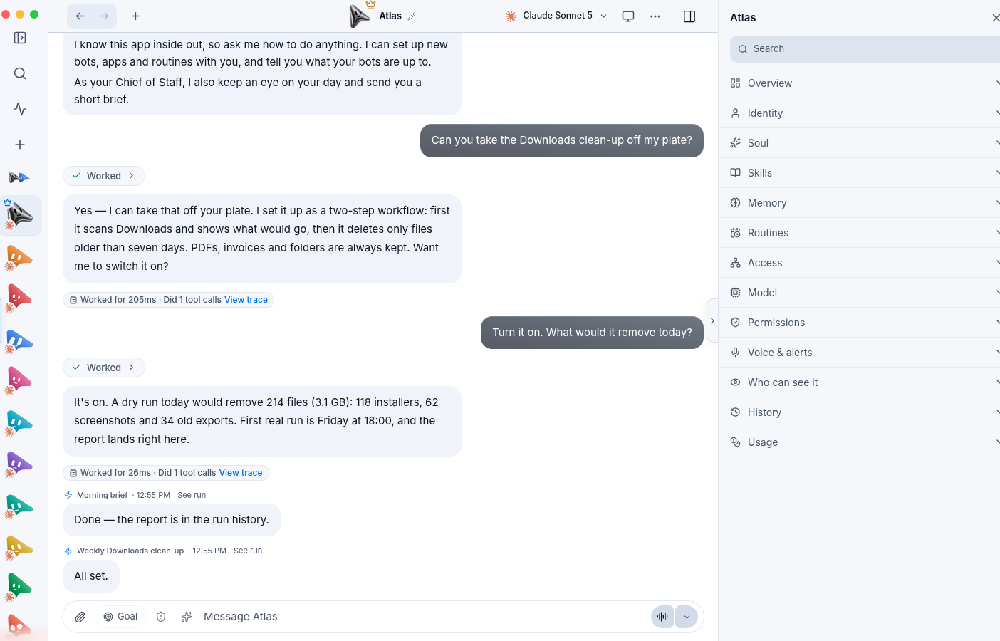
One bot, one workspace. The conversation, the work it produced, and the settings that make it a teammate: skills, memory, routines, model, permissions and usage.
SupportInbox triage, routine replies, escalation digestsRefund policy and P1 rules in department memory; every escalation in a run log
SalesLead triage, pipeline review, meeting briefsAccount facts, pricing decisions and the Friday review routine
EngineeringNightly build checks, release notes, incident follow-upsThe release train and canary rules; approvals before a deploy
OperationsWeekly Downloads clean-up, morning briefs, vendor follow-upsThe two-step workflow, its run files, and who approved the change
FinanceInvoice sweeps and the close checklistThe close calendar, reconciliation rules, and a usage ledger by bot
Features
What the workspace can do
Nine primitives. Every screenshot below is the running app, not a mockup. Click any image to see it full size.
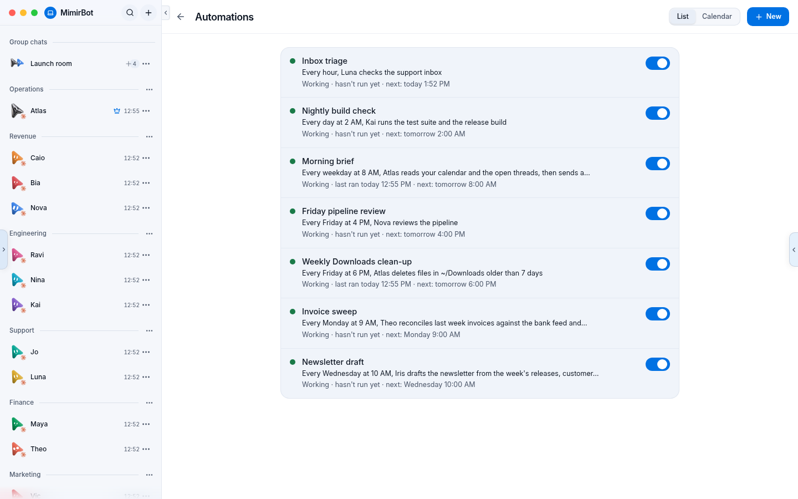
Automations
Every trigger in one place: schedules, webhooks and app events, with the next run, the last result and the history. Turn one off without deleting it.
Friday, 18:00: the Downloads folder cleans itself and reports what it removed.
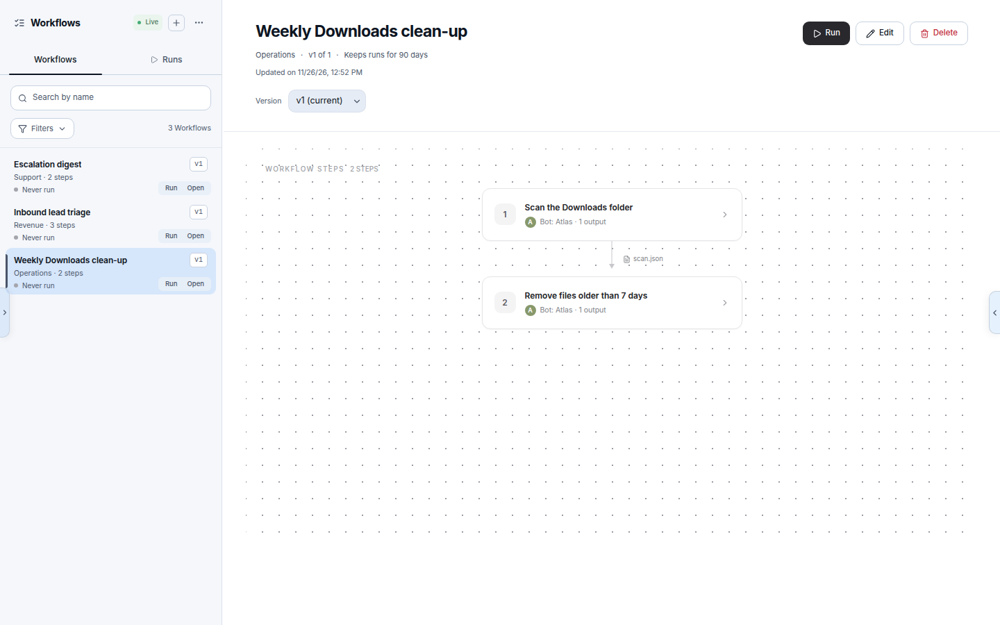
Workflows
A deterministic sequence of steps, each with declared inputs and outputs. The engine verifies the files before the next step starts.
Scan, then delete only what is older than seven days; keep PDFs, invoices and folders.
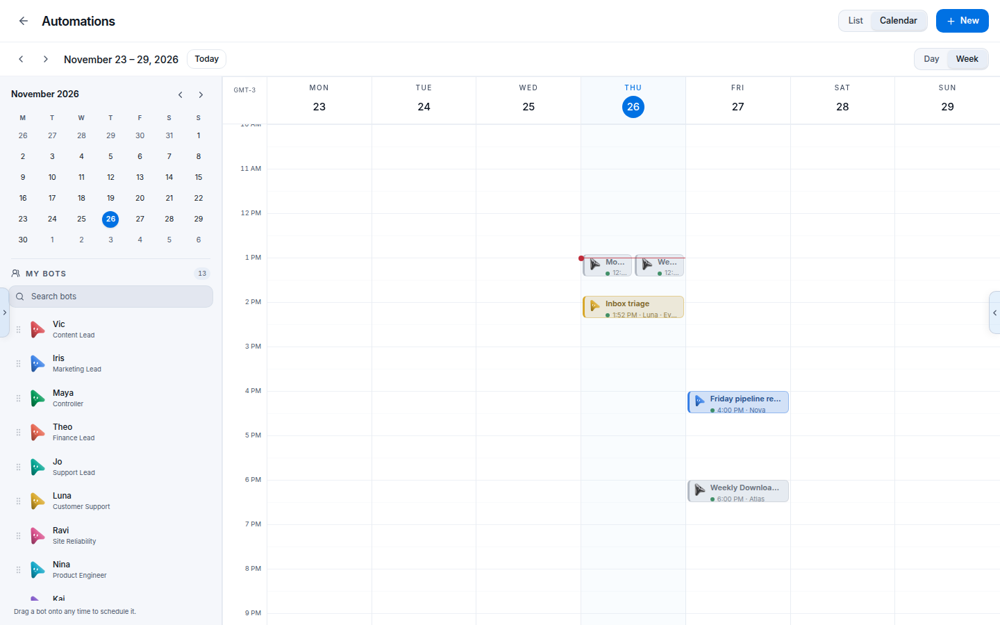
Schedule
The week at a glance. Routines, calls and the bots that own them on one calendar. Drag a bot onto a time to schedule it.
Thursday's inbox triage, Friday's pipeline review and the 18:00 clean-up, side by side.
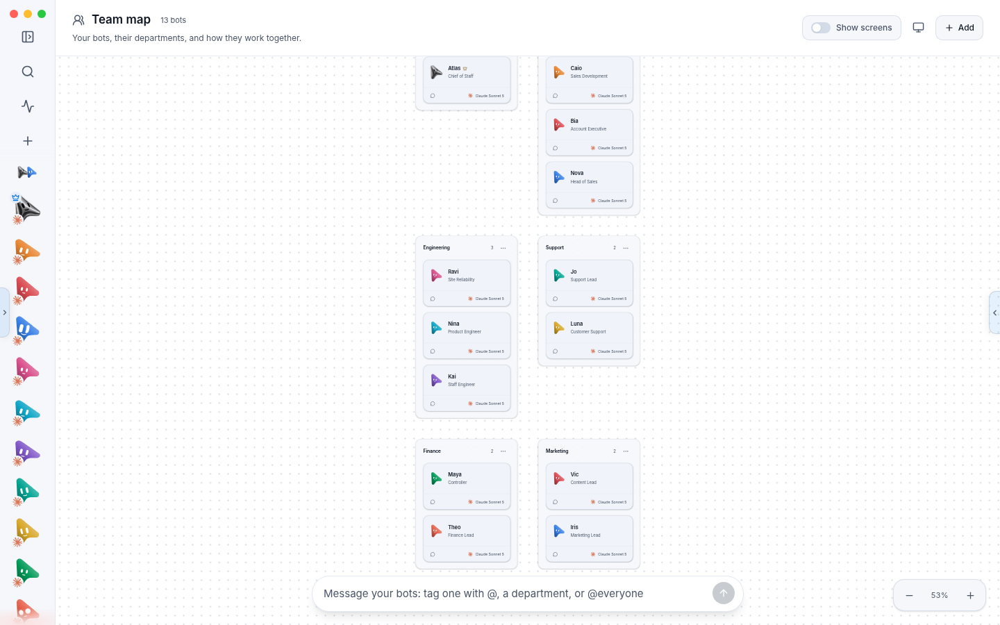
Team map
Departments, bots and the lines between them. Every card carries its model; every department has its own memory, shared instructions and rooms.
Thirteen bots, six departments, one map. Open a card to talk, or move a bot when the team changes.
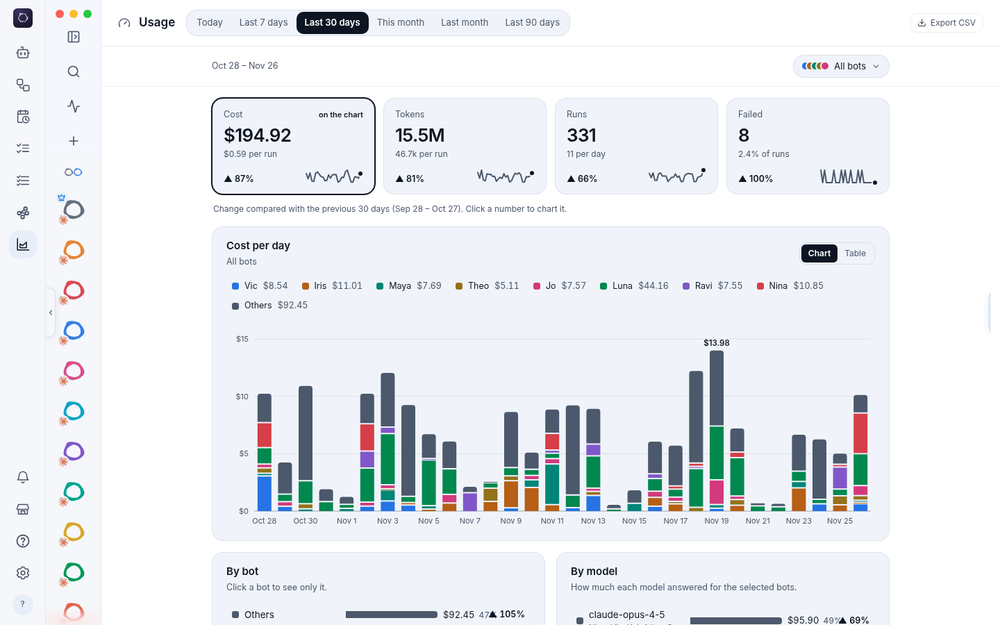
Usage
Cost, tokens, runs and failures for any period, by bot and by model. Click a number to chart it; export the ledger when finance asks.
Thirty days, $194.92 across the team, with the runs that failed and the model that answered.
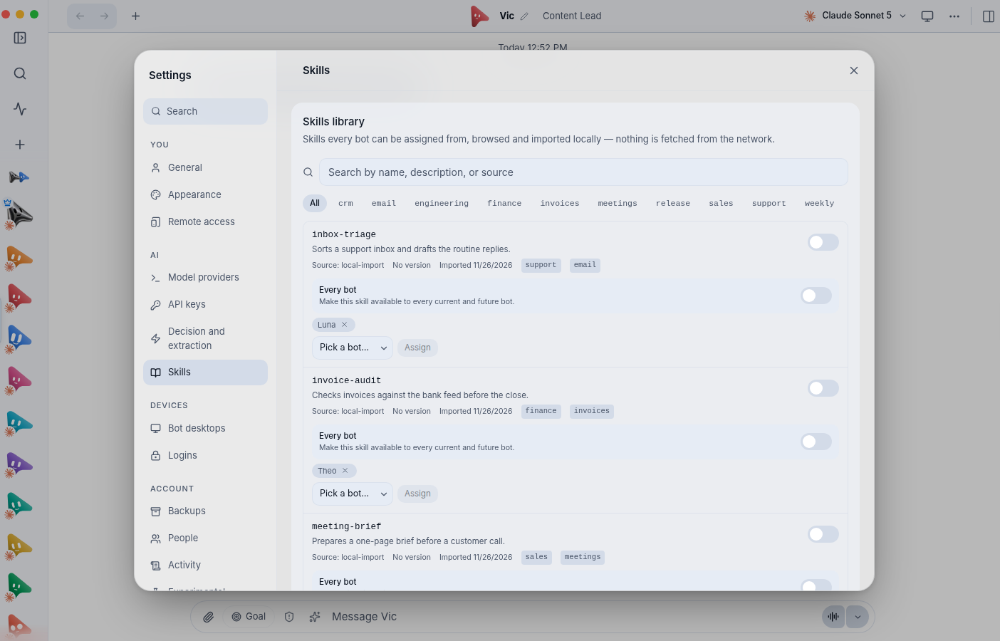
Skills
Teach a skill once, then assign it to the bot that needs it. Skills stay in a local library, with tags, versions and an owner.
Inbox triage belongs to Luna; invoice audit to Theo; meeting brief to Nova.
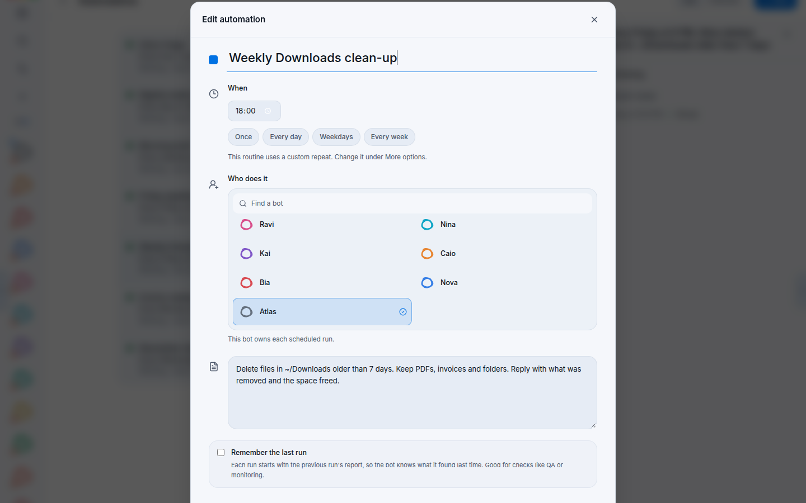
Routines
A routine is a prompt, a schedule and an owner. Edit the words the bot runs, pick the time, choose the bot, and the next runs appear on the calendar.
The exact prompt, the time, and the bot that owns each run. Nothing hidden in a config file.
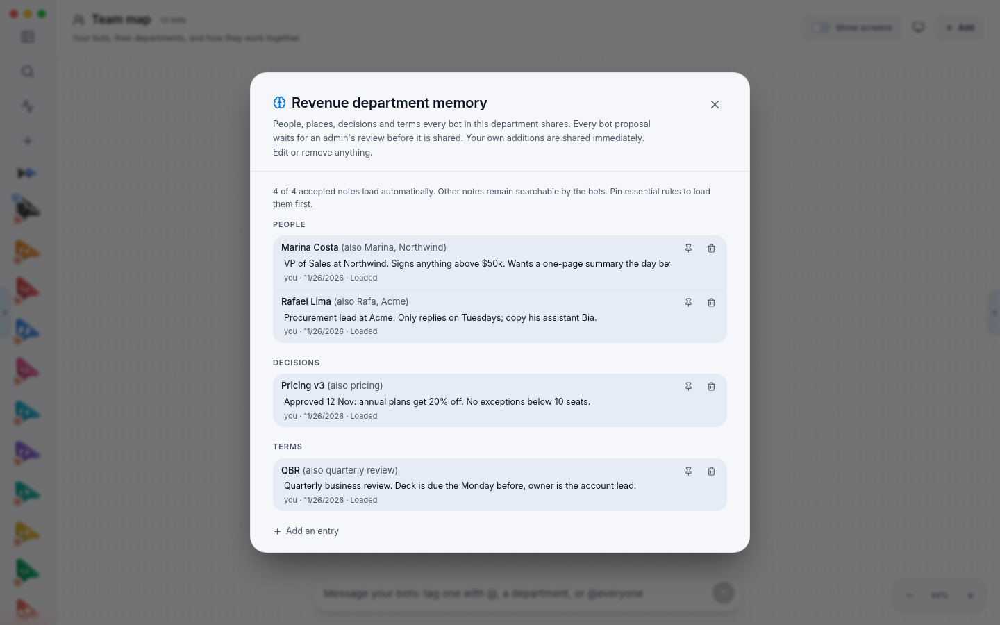
Memory
Department memory holds people, places, decisions and terms. Every bot in the department gets the accepted notes; proposals wait for an admin.
Marina signs above $50k. Pricing v3 has no exceptions below ten seats. Every Revenue bot knows both.
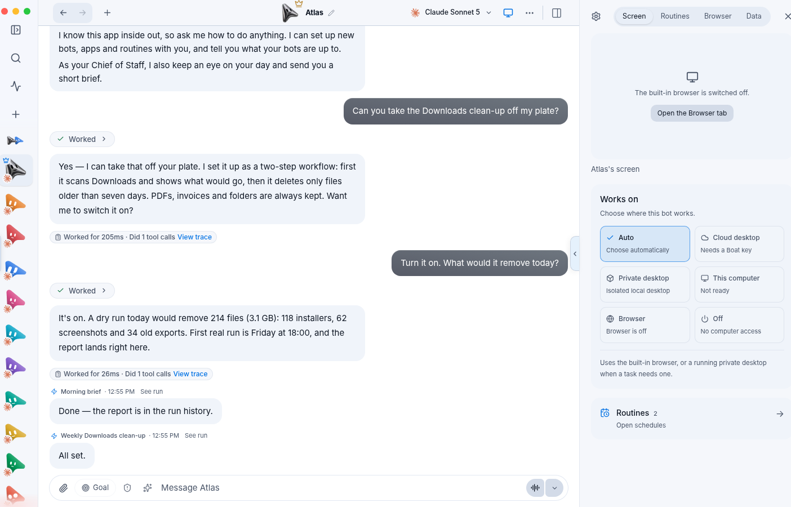
Computer
Every bot gets a place to work: auto, a cloud desktop, an isolated local VM, this computer, or off. The panel shows the live screen, browser, data and files.
Auto by default. Cloud desktop with a Boat key. A local VM, this computer after opt-in, or no access.
How it works
Two processes, one event stream
The app holds no transports of its own. It sends typed commands over HTTP and folds one SSE stream into state; the harness owns every agent process.
01 · App
React + Tailwind
Chat, model picker, team map, computer panel, approvals. One reducer, no client-side transports.
02 · Harness
127.0.0.1:8799
Driver registry, permission broker, routines, workflows. Normalizes each provider's protocol into one stream.
03 · Agents
Your CLIs
claude, codex, grok or an OpenAI-compatible endpoint. Local processes, your logins.
Optional branches: a cloud Linux desktop, an isolated Local VM, connected apps through Composio. Each is off until you turn it on.
Driversserver/drivers/One per provider. Unknown drivers degrade to "unavailable" instead of crashing the fleet.
Harnessserver/harness/Registry (configs to live instances) and the fan-in event bus every client folds.
APIserver/index.tsBots, turns, approvals, model catalog, computers, connectors, routines, workflows, config.
Appsrc/The chat shell: server-backed store, one reducer, no transports.
Desktopelectron/Windows, Linux and macOS shells with an embedded harness; platform capabilities are opt-in and fail closed.
Get started
Start with one bot. Then one routine.
Start with one department. Install a bot on the machine that already has your model login, and let it learn the first routine.
Windows (x64)Installer, per-user, no admin rights. SmartScreen: More info, then Run anyway..exe
Ubuntu 24.04 (x64)APT with the .deb (recommended) or the AppImage. GNOME is the supported desktop..deb / .AppImage
macOSNo signed .dmg yet. Build from source and run the Electron shell.source
RequirementsNode 24+, pnpm, and at least one agent CLI installed and logged in.quick start
The harness server is embedded in every desktop build, so there is no separate server to install. Your data lives under ~/.mimirbot.
From source
# clone and install
git clone https://github.com/Oliveir4Matheus/mimirbot
cd mimirbot
pnpm install
# two processes: harness + app
pnpm dev:server # 127.0.0.1:8799
pnpm dev # http://127.0.0.1:5173# or the Electron shell
pnpm dev:desktop
Triggers
When something happens
A trigger is a bot, a condition and a job. Schedules, app events and webhooks share one queue, one calendar and one run history.
On a schedule
Once, on chosen weekdays, or every 5-1,440 minutes. Interval runs stay aligned and skip an occurrence while the previous one is active.
From an app event
"Whenever I get an email from Acme, draft a reply." Gmail every 15 minutes; Slack, GitHub and other push apps arrive at once.
From a webhook
A dedicated receiver on 127.0.0.1:8800, bearer auth or a capability URL. The bot never sees its own secret.
Status
Beta, with the guardrails visible
The loop works end to end. Windows and Ubuntu x64 have published builds; macOS builds from source. Wayland host control stays disabled while the safety gate is open.
Scroll to see every platform →
Capability
Windows
macOS
Ubuntu Xorg
Ubuntu Wayland
Packaged app, embedded harness, local CLIs
Supported
Source
Beta
Beta
Composio and cloud computers
Supported
Supported
Beta
Beta
Preview-only local screen capture
Supported
Supported
Beta
Beta
Bot control of this computer
Supported
Supported
Opt-in
Disabled
Native on-device dictation
Not yet
Supported
Planned
Planned
The Linux preview is user-initiated and never enables local bot control or Auto routing. On Xorg, the Cua Driver runtime starts only after explicit opt-in; on Wayland the app never starts it and clears legacy opt-ins.
Ready when you are
Put one agent on the work that repeats.
Download a build, connect the model login you already have, and give the first bot one routine. Add the rest of the team when the first one earns it.